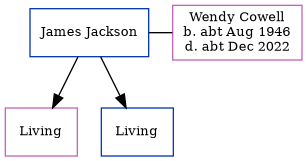

James A Jackson
[ Home ] | [ Calendar ] | [ Surnames Index ] | [ Errors ] | [ Family History ]James Jackson, the husband of Wendy J Cowell (the cousin on the mother's side of Nigel Horne), and married Wendy (with whom he had 2 surviving children Samantha and Damian) in Thanet, Kent, England around Nov 19661 (Oct/Nov/Dec).
Citations
- England & Wales, Marriage Index: 1916-2005 Online publication - Provo, UT, USA: The Generations Network, Inc., 2009.Original data - General Register Office. England and Wales Civil Registration Indexes. London, England: General Register Office. © Crown copyright. Published by permission of the Cont
Media
England & Wales marriages 1837-2005 - BMD/M/1966/4/AZ/000666/094
Family Tree
Map
Generated by ged2site. Last updated on Jul 3, 2024